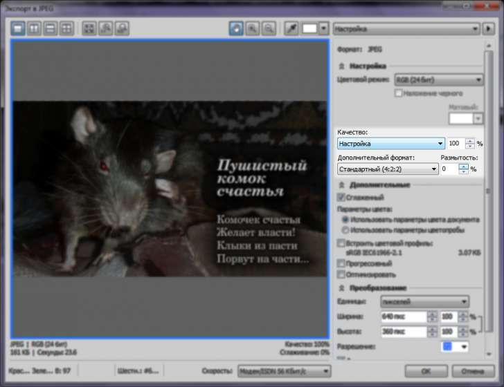

подписать фото без потери качества
agent_drozd / 18.06.2015, 23:26
Форум:
Здравствуйте!
У меня такой вопрос,
подскажите, пожалуйста, во время работы в Corel Paint Shop Pro X7 после добавления текста на фотографию, после сохранения готовая фотография сильно теряет качество (будто изображения подписывали в каком-то windows paint). Приходится сохранять изображения в формате png вместо jpeg что в разы утяжеляет файл.
Может в настройках что-то где-то подкрутить надо?
Если Paint Shop Pro не особо отличается от Corel Photo-Paint, то можно так:
Это сохранит фото, не добавляя новых искажений, но размер файла всё-таки незначительно возрастёт.